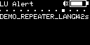
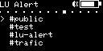
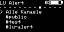
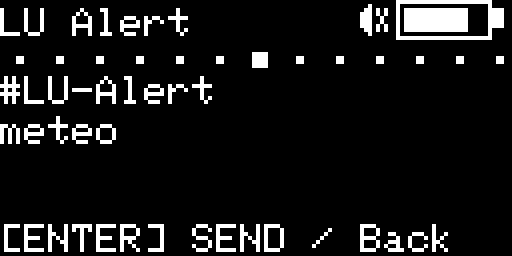
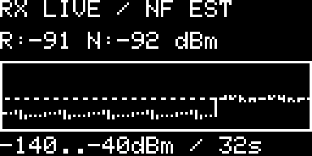
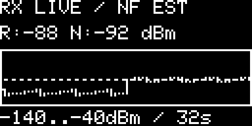
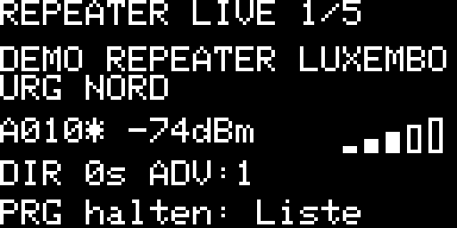

MESHCORE · LUXEMBURG & REGION
Dein Mesh.
Direkt im Blick.
Nachrichten auswählen, Antworten vollständig lesen und den Tracker im Blick behalten. Lange Texte laufen am Wio nach einer kurzen Lesepause automatisch nach links. LU-Alert für MeshCore bringt ein klassisches Menü auf den Wio Tracker L1 Pro – mit zehn Kanalmenüs für Inbox, Live RX und Quick TX, einer eigenen Mac-App und einer bedienbaren Browser-Simulation.
Unabhängig · öffentlich · keine privaten Geräteprofile

LuxembourgMENU
NEU AM WIO · LAUFSCHRIFT
Mehr Text.
Alles im Blick.
Lange Nachrichten, Absender und gekürzte Repeater-Namen laufen nach einer kurzen Lesepause automatisch nach links. So liest du den ganzen Text. Kurze Texte bleiben ruhig stehen.
LU-Alert RC8 · Wio-Vorschau · PIN-Sperre weiterhin dabei

Echte Simulator-Bildschirme mit Beispieltexten. Im Browser siehst du die Laufschrift in Bewegung.
WIO · INBOX, LIVE RX & QUICK TX
Zehn Kanäle.
Deine Auswahl.
Wähle deinen Kanal für Inbox und Live RX selbst aus oder öffne seine Quick-TX-Vorlagen. Die zehn Namen sind Menüvorlagen: Der Tracker verwendet seine vorhandene Kanalkonfiguration. Es werden keine Kanäle angelegt und keine Schlüssel von dieser Website übernommen.
Schreibweise wie vorgegeben. Ein fehlender oder mehrdeutiger Kanal wird nicht automatisch ersetzt. RX-Kanalauswahl bedienen.


AUSWÄHLEN. PRÜFEN. BESTÄTIGEN.
Der Text steht da,
bevor er rausgeht.
Quick TX zeigt den genauen Nachrichtentext und verlangt Enter zum Senden. Die lokale Annahme ist kein Zustellungs-ACK. Es gibt keine automatischen Wiederholungen.
meteo ist als Nachrichtenvorlage verfügbar. RAD, Warnungen und der allgemeine Bot-Eintrag bleiben ohne hinterlegte Befehlssyntax gesperrt.


MEHR ALS EIN STARTLOGO
Live lesen.
Ruhig weiterfunken.
Die RAM-Inbox macht längere Nachrichten scrollbar. Funkstatistik, GPS-Bewegungskurs und BLE-Status kommen aus den vorhandenen Treibern. Die Grundrausch-Schätzung wird aus dem MeshCore-Cache gelesen, ohne einen Scan auszulösen.
Zweimal MENU schaltet Sound an oder aus. Dreimal MENU sperrt die Tasten mit einem Pixel-Schloss. Neu: Im Menü „Bildschirmsperre“ einen vierstelligen Code erstellen, ändern oder entfernen. Bei aktivierter PIN verlangt das Entsperren den Code. Empfang und Hintergrundfunktionen laufen weiter.
WIO TRACKER L1 PRO · OLED
Im Browser und
auf dem Mac ausprobieren.
Erkunde RC8 mit zehn Kanalmenüs, Inbox, Live RX, Laufschrift und PIN-Sperre mit Demodaten. Im Browser kannst du direkt loslegen; die Mac-App läuft nativ auf Apple Silicon.
Apple Silicon · macOS 14+ · ad-hoc signiert, nicht notarisiert.
Die Firmware ist für den ursprünglichen Wio Tracker L1 Pro OLED vorgesehen und noch nicht am Gerät geprüft.
ÖFFENTLICHER CODE. DEINE EIGENEN DATEN.
Keine fremde Identität
auf deinem Tracker.
Downloads enthalten keine persönlichen IDs, IP-Adressen, Standorte, Kontakte, Kanalprofile oder Schlüssel. Die vorgegebenen Menübezeichnungen sind keine exportierte Gerätekonfiguration. Diese Website nutzt keine Analyse- oder Werbeskripte und fragt keinen Standort ab.
Heltec V4.3 ist als separate OLED-Vorschau verfügbar. Die Wio-Dateien sind dafür nicht geeignet. Hardware-Roadmap
HELTEC V4.3 · 0,96″ OLED · VORSCHAU
Ein Knopf.
Alle Menüs.
Die bestehende Heltec-dev4-Vorschau behält ihre bisherigen acht Kanalmenüs. Mit PIN lässt sie sich direkt im Browser über PRG bedienen. Bei der Code-Eingabe wählt ein kurzer Druck die Ziffer; Halten bestätigt oder geht zurück. Außerhalb der Eingabe sperrt dreimal kurz die Tasten. Dieselben Menüs und Pixelrenderer laufen auch in der Firmware und Mac-App.
Probiere die Live-Pegelkurve und Repeater mit Name, vierstelliger Kennung und Signalstärke aus. Das klassische Menü enthält die übernommenen LU-Alert- und trafic-Botvorlagen. Alle Werte im Simulator sind Demodaten.
Heltec V4.3 ist eine Vorschau und noch nicht am Gerät geprüft. Mac-Simulator und getrennte R2-/R8-Anwendungsabbilder stehen in den Downloads. Die BIN-Vorschauen sind keine vollständigen Erstinstallationspakete. Wio-Firmware ist nicht für Heltec geeignet. Details · SHA256


WIO UND HELTEC · FUNKMONITOR
Welche Repeater höre ich?
„Repeater live“ zeigt den vollständigen Namen über zwei Zeilen, eine vierstellige Hex-Kennung, RSSI in dBm, Signalbalken und das Alter des direkten Empfangs. Die Anzeige arbeitet passiv mit empfangenen Adverts und kennzeichnet weitergeleitete oder alte Werte.
Bedienung und Bedeutung der Werte
Browserwerte sind Demodaten. Der aktuelle RX-Pegel umfasst Signal und Rauschen; die Rauschschätzung wird getrennt angezeigt.
Firmware, Mac-App & Quellcode
Downloads nach Board und Dateityp auswählenDie aktuelle Firmware ist eine Vorschau und noch nicht am Gerät geprüft.

Neu: aktiver Zero-Hop-Scan. Starten über ENTER beziehungsweise PRG, mindestens 30–35 Sekunden Abstand, höchstens zwei Minuten. Bei knappem Airtime-Budget langsamer. PING sind unsignierte Antworten; Namen stammen aus dem Cache. Wio-Scan ausprobieren · Heltec-Scan ausprobieren · Bedienung und Airtime

AUSPROBIEREN & HERUNTERLADEN
Die passende Version finden.
Wio-Firmware, macOS-Simulator und Heltec-Vorschau sind jetzt auf einer eigenen Downloadseite nach Gerät und Dateityp sortiert.
Alle Downloads öffnen Zum Newsletter
Downloadaufrufe werden ohne IP-Adressen oder Besucherkennungen zusammengezählt. Datenschutz